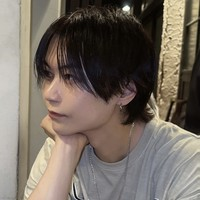
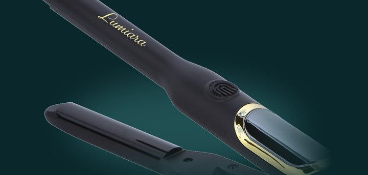
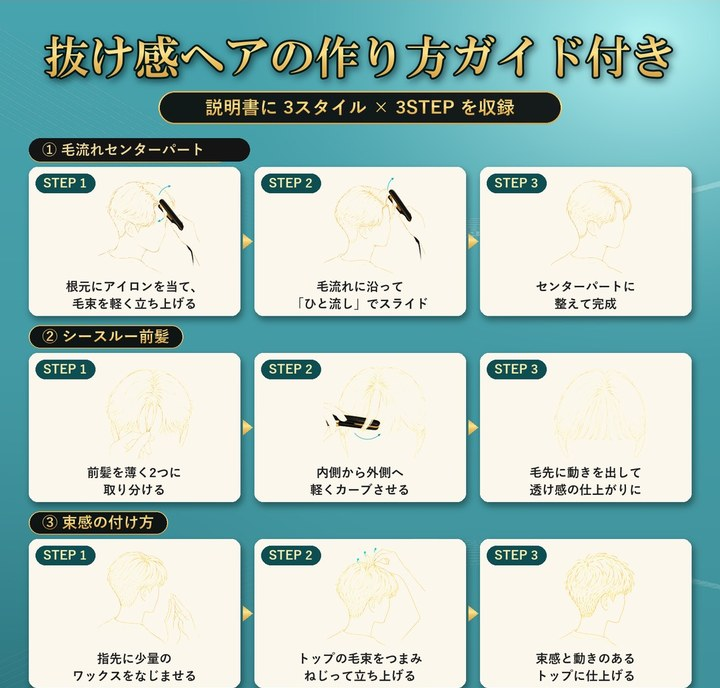
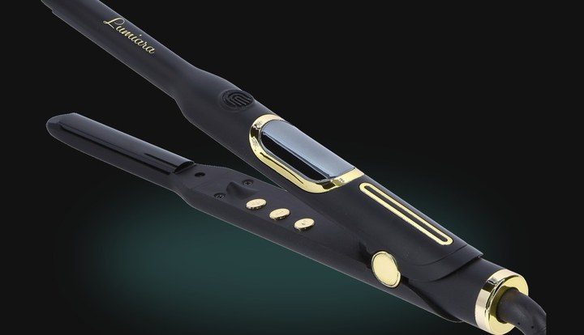
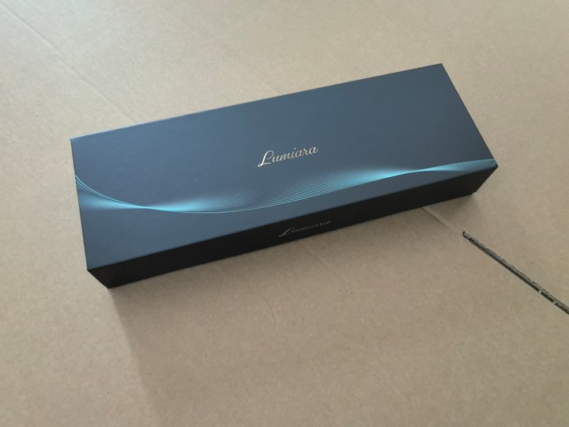
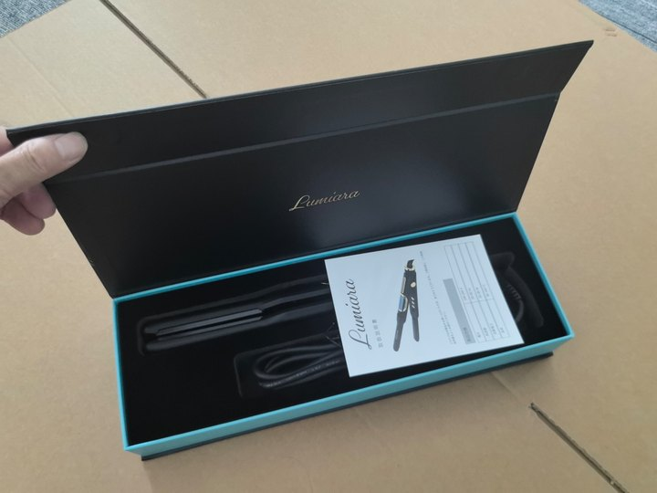

※このトークは、イメージです
今日
ねえ、女の子って、男のどこ見てる？

みお
え、髪かな。顔より先に、髪見ちゃう
ある調査だと、女性が「男の人に特に気を遣ってほしい」って答えた1位、髪型・ヘアケアだったよ
印象を決めているのは、顔より、髪。
「雰囲気ある」の正体を、数字で見ると。
71.3%
女性が「男性の見た目で特に気を遣ってほしい」と答えた1位は髪型・ヘアケア
女性609名・2022年
69%
男性の身だしなみで大事なのは「髪」か「肌」か。7割が「髪」と回答
女性100名・2026年
57.2%
第一印象で顔を見る20代男性が顔の中で最も気にするのは「髪型」
20代男女1,039名・2018年
雰囲気を決めているのは、顔ではなく髪でした。
出典：株式会社PERCUT「男性の髪型に関する調査」（2022年8月・女性609名）
株式会社ノーマリズム調べ（2026年8月・20〜50代女性100名）
TesTee Lab「美容室・ヘアスタイルに関する調査」（2018年9月・20代男女1,039名）
株式会社ノーマリズム調べ（2026年8月・20〜50代女性100名）
TesTee Lab「美容室・ヘアスタイルに関する調査」（2018年9月・20代男女1,039名）
顔、じゃないんだ…？
みお
顔は変えられないじゃん笑
でも髪は変えられるよ
でも髪は変えられるよ
髪に動きがあるか、分け目が決まっているか、束感があるか。
人が「雰囲気ある」って感じてるの、ほとんど髪だよ
人が「雰囲気ある」って感じてるの、ほとんど髪だよ
顔は変えられなくても、雰囲気は今日から作れるよ
顔は普通。でも「雰囲気あるね」と言われたい
髪に動きがなくて、のっぺり見える…
センターパートにしたいのに、毛流れが作れない
垢抜けたいけど、何を変えればいいか分からない
みお
ヘアアイロン、使ってみたら？
でも、男がアイロンって、ちょっと恥ずかしい…
みお
もう珍しくないよ。この数年で、はっきり増えてるんだって
アイロンを使う男は、もう珍しくない。
この数年で、はっきり増えています。
10・20代男性の、ヘアアイロン利用率
8〜9%2021年▶30%超2023年
2年で、3倍以上に。
マイボイスコム「美容家電に関するアンケート調査」
第4回（2021年11月・10,304名）／第5回（2023年11月・9,797名）
第4回（2021年11月・10,304名）／第5回（2023年11月・9,797名）
54%
15〜29歳の男性の半数以上が、ヘアアイロンを使ったことがある
男性300名・2023年
34.8%
20代男性のメイクアイテム購入率。1年で+8.9ポイント。見た目に手をかける男性そのものが、増えている
15〜69歳男女13,200名・2025年
隠す道具から、当たり前の道具へ。
出典：株式会社SheepDog「ヘアアイロンに関するアンケート」（2023年9月・15〜29歳男性300名）
リクルート ホットペッパービューティーアカデミー「美容センサス2025年下期」美容意識・購買行動編
リクルート ホットペッパービューティーアカデミー「美容センサス2025年下期」美容意識・購買行動編
雰囲気は、髪で作れるんだよ。
顔立ちの話じゃないの
顔立ちの話じゃないの
同じ顔でも、髪に動きと分け目があるだけで「雰囲気ある人」に見える

抜け感は作れる。
先に気づくのは、いつも周りだよ。
清潔感は、服より先に髪で見られてるし。
整った分け目と束感があるだけで、同じ顔でも「雰囲気変わったね」って言いたくなる
整った分け目と束感があるだけで、同じ顔でも「雰囲気変わったね」って言いたくなる
どうやって作るの？
みお
このアイロンをつくった人の話、聞いてみて
ヘアアイロン社長とのトーク

ヘアアイロン社長
だから、髪を変える道具をつくりました。
はじめまして。ヘアアイロン社長です。
EC会社をやっていて、楽天やAmazon、TikTok Shopで自社の商品を売っています。
EC会社をやっていて、楽天やAmazon、TikTok Shopで自社の商品を売っています。
「ヘアアイロン社長」という名前は、ここ最近ヘアアイロンなどの販売に力を入れているので、この名前にしています。笑
ここ数年、見た目にはそれなりにお金をかけてきました。
その中でいちばん「雰囲気が変わった」と実感したのが、髪型でした。しかも、かかるお金はいちばん少ない。
その中でいちばん「雰囲気が変わった」と実感したのが、髪型でした。しかも、かかるお金はいちばん少ない。
ヘアアイロンは、いい物がもうたくさんあります。
それでも自分でつくったのは、僕がいちばん変わったと感じた「髪から変える」という体験を、男の人に、いちばん最初に届ける道具が欲しかったからです。
それでも自分でつくったのは、僕がいちばん変わったと感じた「髪から変える」という体験を、男の人に、いちばん最初に届ける道具が欲しかったからです。
細さは、前髪と毛流れのために。
色と箱は、洗面台に置いて、人に見られても嬉しい一本になるように。
「髪を変えれば、男は変わる」を、この一本から。
色と箱は、洗面台に置いて、人に見られても嬉しい一本になるように。
「髪を変えれば、男は変わる」を、この一本から。

- 細身のプレートで、根元から毛流れ
- 温度を覚えて、毎朝同じ仕上がりに
- 洗面台に置ける、黒×ゴールド
顔は変えられない。でも雰囲気は、髪で作れる。
その一本を、男のために。
その一本を、男のために。
特長を、順番に話しますね。
【POINT 01】ひと流しで、毛流れが決まる。
細身のプレートだから、前髪や根元にも当てやすい。
根元に当てて、毛流れに沿ってひと流し。それだけで、センターパートの形ができます。
根元に当てて、毛流れに沿ってひと流し。それだけで、センターパートの形ができます。

細身プレート（実物写真）
【POINT 02】作り方ガイドも、付けました。
説明書に、3スタイル×3ステップのガイドを載せています。
正直に言うと、セットはガイドを読んだだけですぐ上手くなるものではありません。
動画を見て、練習して、それでも迷ったときに手元で見返せる目安として。
正直に言うと、セットはガイドを読んだだけですぐ上手くなるものではありません。
動画を見て、練習して、それでも迷ったときに手元で見返せる目安として。

【POINT 03】隠す道具から、見せる道具へ。
マットな黒に、ゴールドの縁取り。
洗面台に置いてあっても、カバンから出てきても、恥ずかしくない。むしろ、見せたくなる。
洗面台に置いてあっても、カバンから出てきても、恥ずかしくない。むしろ、見せたくなる。

実物写真
それと、軽さも、狙って作りました。
重い方が、高級に見えるのは分かっていました。それでも、軽さを選んだ理由があります。
重いアイロンほど、手は疲れやすく、挟む力が強くなりダメージにつながることがある
出典：MTG(ReFa)公式サイト「ヘアアイロンの選び方」コラム
手の疲労後は、握力や動作の精密さが一時的に低下することが確認されている
出典：Ergonomics誌掲載研究（2026年）
前髪や生え際は、皮膚が薄く、繊細な部分。疲れた手で扱う道具じゃ、危ない。
だから、軽さにはこだわりました。
だから、軽さにはこだわりました。
【POINT 04】贈っても、恥ずかしくない箱。
硬い芯のギフトボックス。黒×ゴールドの外箱に、ターコイズの内箱。
誕生日や入学祝いに、そのまま渡せます。
誕生日や入学祝いに、そのまま渡せます。

外箱。マットな黒に、ゴールドのロゴ。

開けると、ターコイズの内箱。本体と取扱説明書が入っています。
もちろん、中身もちゃんと。
毎日使う道具として、必要なものは全部入っています。
毎日使う道具として、必要なものは全部入っています。
- 80〜260℃5℃単位で温度設定
- MCHヒーターすぐ温まり、熱が均一
- 自動電源OFF切り忘れても安心
- 温度ロック・メモリー前回の温度で起動
- 360度回転コードねじれにくい
- 1年保証ECモールの注文履歴から
本体サイズ 260×40×30mm／MCHヒーター採用／保証書付き
どんな人向けなの？
ヘアアイロン社長
こんな人のために。
- 雰囲気イケメンになりたい顔は変えなくていい。髪に動きと分け目を
- のっぺり見える。髪に動きがないひと流しで毛流れがつく、細身プレート
- センターパート・マッシュをきれいに作りたい毛流れと分け目が、ひと流しで決まる
- 男がアイロンって…と、まだ隠している洗面台に置いても様になる、黒×ゴールド
近日発売です。
LINEに登録した人に、発売日にクーポンをお届けします。
LINEに登録した人に、発売日にクーポンをお届けします。
発売予定価格は LINE で先行案内先行登録の方だけの発売日クーポンを予定しています
※本ページは発売前の先行登録のご案内です。現在、商品の販売は行っておりません。
なんで、まだ売らずに「先行登録」なの？
ヘアアイロン社長
このアイロンは、まだ発売前です。
値段や同梱物を決める前に、毎朝のセットで困っている人の声を、僕が直接聞きたいと思いました。
値段や同梱物を決める前に、毎朝のセットで困っている人の声を、僕が直接聞きたいと思いました。
STEP 1LINEで
登録
登録
▶
STEP 2アンケートに
答える
答える
▶
STEP 3発売時に
先行価格で
ご案内
先行価格で
ご案内
いただいた声をもとに、発売の中身と価格を、僕が決めます。
登録して大丈夫？
ヘアアイロン社長
安心して登録していただくために、4つお約束します。
- 登録は無料です購入の義務はありません。
- いつでも解除できますLINEをブロックするだけで止まります。
- お知らせは月1〜2回までたくさんのメッセージは送りません。
- 住所やメールアドレスは不要LINEの友だち追加だけで完了します。
ヘアアイロン社長
EC会社を経営。楽天・Amazon・TikTok Shopで自社の商品を販売しています。
TikTokでも「ヘアアイロン社長」の名前で、これから発信していきます。
TikTokでも「ヘアアイロン社長」の名前で、これから発信していきます。
顔は変えられない。髪は変えられる。
LINE で発売日クーポンを受け取る
登録無料・いつでも解除OK
運営者情報
| 運営会社 | 株式会社L-GM |
|---|---|
| 所在地 | 神奈川県横浜市都筑区茅ケ崎中央11-5 パスタビル305 |
| お問い合わせ | yokohama1227@l-gm266.info |
| ブランド名 | LUMIARA（ルミアラ） |
※本ページは発売前の先行登録のご案内です。現在、商品の販売は行っておりません。
プライバシーポリシー
株式会社L-GM（以下「当社」）は、LUMIARA メンズヘアアイロンの先行登録でお預かりする情報を、次のとおり取り扱います。
1. 取得する情報
- LINE公式アカウントの友だち追加により当社が確認できる情報（LINEの表示名など）
- アンケートでご回答いただいた内容（年代、髪の悩み、希望価格など）
2. 利用する目的
- 商品の企画・開発（価格・同梱物などの検討）
- 発売のご案内、発売日クーポンのご案内などのお知らせ
- お問い合わせへの対応
3. 第三者への提供
法令に基づく場合を除き、ご本人の同意なく第三者に提供することはありません。
4. 管理
取得した情報は、不正なアクセス・紛失・漏えいが起きないよう適切に管理します。
5. お知らせの停止
LINE公式アカウントをブロックすることで、いつでもお知らせを止めることができます。
6. お問い合わせ
株式会社L-GM yokohama1227@l-gm266.info
制定日：2026年9月27日
© 2026 LUMIARA / 株式会社L-GM